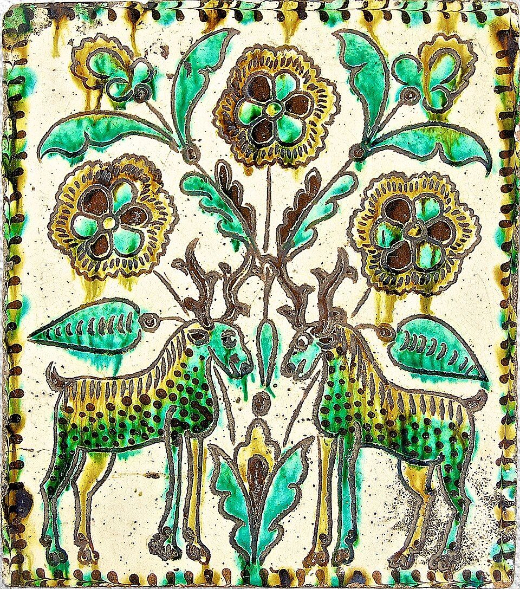

<!doctype html>
<html lang="uk">
<head>
<meta charset="utf-8">
<meta name="viewport" content="width=device-width, initial-scale=1">
<title>Люстерко · «Мальоване люстерко» · аркуш системи</title>
<link rel="preconnect" href="https://fonts.googleapis.com">
<link rel="preconnect" href="https://fonts.gstatic.com" crossorigin>
<link href="https://fonts.googleapis.com/css2?family=Geologica:slnt,wght@-12..0,300..700&display=swap" rel="stylesheet">
<link rel="stylesheet" href="система.css">
<style>:root{--tlo:#FAF6EA;--tlo2:#FAF6EA;--tekst:#4B2A1B;--dribne:#775D4F;--akc:#4B2A1B;--lin:rgba(75,42,27,.3);--f:Geologica,system-ui,sans-serif;--fz:Geologica,system-ui,sans-serif;--fzw:600}
h1{margin:30px 0 18px}h1 .napys{display:block;max-width:100%;height:auto;margin:0 0 14px;overflow:visible}
.ideja{font-size:clamp(20px,2.6vw,27px);line-height:1.3}
.vz{display:grid;grid-template-columns:repeat(auto-fit,minmax(260px,1fr));gap:28px;margin:18px 0 6px;align-items:start}
.vz figure{margin:0}.vz img,.vz svg{display:block;width:100%;height:auto}.vz img{border:1px solid var(--lin)}
.vz figcaption,.bs figcaption{font-size:14px;line-height:1.4;color:var(--dribne);margin-top:8px}
.zn{display:flex;flex-wrap:wrap;gap:22px 30px;align-items:flex-end;margin:14px 0 4px}
.zn figure{margin:0;display:grid;justify-items:center;gap:6px;font-size:13.5px;color:var(--dribne);text-align:center;max-width:150px}
.bs{display:flex;flex-wrap:wrap;gap:14px;padding:4px 0 12px}
.bs figure{flex:none;width:158px;margin:0}
.bs .ram{width:158px;height:340px;overflow:hidden;border:1px solid var(--lin)}
.bs iframe{width:390px;height:844px;border:0;transform:scale(.4);transform-origin:0 0}
</style>
</head>
<body>
<main></main>
<script src="кахля.js"></script>
<script src="написи.js"></script>
<script src="карта.js"></script>
<script>
window.СИСТЕМА = {
  n: 4, kljuch: 'm', fajl: 'мальоване.html', nazva: 'Мальоване люстерко',
  shapka: 'один приклад, пропрацьований окремо', ohljad: 'огляд', kil_kil: 'Перша збірка і три кола',
  ideja: 'Люстерко — річ із двома боками: лице чисте, на ньому лише вона й одяг; зворот мальований, як косівська кахля, — там розмова, барви, чекання й пам’ять. Усе на звороті живе, як на кахлі: лінія, полива, випал.',
  pozycija: 'Позиція: відповідь люстерка — один образ; «сміливіше» й «ще один» — кроки вбік, вони стоять під образом, після суми. Головне — образ, тобто лице; розмова — зворот тієї самої речі, до нього один дотик (на телефоні бік обертається, на широкому екрані обидва поруч).',
  pravyla: [
    '<b>Два боки.</b> Лице: вона й фото одягу, поруч — лише бура лінія, крапка й пелюстка. Зворот: малюнок, полива, розмова, «що я зрозуміла», барви, чекання, «Мої образи». На широкому екрані боки стоять поруч, між ними — держак люстерка: лінія зі знаком-люстерком угорі.',
    '<b>Лінія → полива → випал.</b> Припущене, невибране, неготове — лінія чи порожнє кільце. Сказане, вибране, готове — бура крапка чи полива. Поки збирається — полива бліда; зібралось — «випал», барви яскравішають. Вдягнений образ — вінець його кахлі полито жовтим із патьоками.',
    '<b>Пара.</b> Лівий олень — вона, як є: лінія. Правий — відбиття, вбране: полива. У розмові так само: її слова — в рамці-лінії, слова Люстерка — від знака-люстерка.',
    '<b>Квітка й пелюстка.</b> Образ — квітка, пелюстки якої мають барви його речей; одна річ чи одна барва — одна пелюстка. Тому кружечків кольору в інтерфейсі нема: барва шкіри, основа палітри, сукня в образі — все пелюстки.',
    '<b>Полива не чіпає одягу.</b> На лиці поливи нема, крім малого знака-люстерка з її портретом. Жовта полива може нести бурий текст; зелена — лише в малюнку. Поруч із барвами одягу вибране позначає товста лінія, а не полива.',
    '<b>Напис — для імен.</b> Великим написом Misto стоять лише ім’я продукту, імена образів і вироки («НЕ ЗАРАЗ», «ДОБРЕ»). Усе, що треба читати, — Geologica.'
  ],
  ekrany: [[1, 'Початок: зворот люстерка'], [2, 'Знайомство: її лице в склі'], [3, 'Розмова: зворот'], [4, 'Що я зрозуміла'], [5, 'Барви: квітка'], [6, 'Чекання: люстерко малює'], [7, 'Образ: лице'], [9, 'Сумнів і заміна'], [11, 'Купити чи ні'], [13, 'Мої образи: піч']],
  stany: [
    ['Перше відкриття', 'Зворот люстерка: пара оленів обабіч квітки-люстерка. Лівий — лінією, правий на очах з’являється лінією, береться поливою і «випалюється». Одна кнопка.', 1],
    ['Знайомство й фото', 'Її портрет у склі квітки-люстерка; барви шкіри, волосся й очей — трьома пелюстками; два фото, обхвати одним рядком.', 2],
    ['Розмова про нагоду', 'Плитки нагод лінією, вибрана — полита жовтим; її слова в рамці-лінії з позначкою «з голосу», слова Люстерка — від знака. «Сказати» й «Написати» завжди під пальцем.', 3],
    ['«Що я зрозуміла»', 'Ім’я нагоди великим написом; крапка — сказала (з її словами дослівно), кільце — припустила (з причиною й правкою на місці).', 4],
    ['Барви', 'Квітка барв: три пелюстки основи, дві й одна — сусіди, вінець — світле, серединка — крапля навпроти; основа й спосіб поєднання під нею.', 5],
    ['Чекання дві–п’ять хвилин', 'Люстерко малює відбиття: кожен справжній крок збирання кладе свою поливу; під малюнком крок словами, факт числом і шість місць, що заповнюються речами. Можна згорнути — «Покликати мене».', 6],
    ['Образ', 'Лице: квітка образу, ім’я, слова Люстерка, шість фото 3 : 4 з пелюсткою барви, сума, «Вдягну» і «Щось не те» під пальцем.', 7],
    ['Річ зблизька', 'Фото, причина від Люстерка, дорога в крамницю, «не ця», «збери інший образ під цю сукню».', 8],
    ['Сумнів і заміна', 'Її сумнів словами; три заміни з різницею в ціні й тим, що кожна зробить з образом; «раджу ці» — крапкою. Своє пальто з шафи — велика пелюстка замість фото.', 9],
    ['Збережений образ', 'Той самий образ після заміни: нова сума поруч зі старою, рядок «Збережено», жовта крапка на «Мої образи».', 10],
    ['Купити чи ні', 'Фото з крамниці, вирок великим написом, три причини (крапка — за, кільце — проти), порівняння з річчю з образу, три схожі дешевші.', 11],
    ['Оцінка свого образу', 'Її фото з дзеркала, вирок і одна порада; крапка — що бачу, кільце — чого не бачу й про що мовчу.', 12],
    ['Мої образи', 'Піч: кахля за кожен образ — квітка з пелюстками барв його речей, ім’я, нагода, дата. «Ще не вдягала» — кнопка: торкнулась — вінець поливається.', 13],
    ['Кілька образів', 'Другий образ тієї самої нагоди — «На крок сміливіше»: та сама будова, інша квітка; перехід між образами — під сумою.', 14],
    ['Довгий текст і довгі назви', 'Слова Люстерка згортаються до чотирьох рядків із «читати далі»; назва речі — до трьох рядків; ім’я з трьох слів стає у два рядки.', 15],
    ['Погане фото речі', 'Фото 199 × 300 — показане не більшим за справжнє, з підписом (перша річ у цій сцені). Знак крамниці замість речі — плашка зі словами й назвою крамниці (сцена 9, третя пара).', 14],
    ['Помилка', 'Правий олень лишився перерваною лінією; сказано, де урвалось і що її слова й барви на місці; дві дії.', 16],
    ['Порожній початок', 'Піч холодна: один олень лінією, порожні місця під кахлі, одна дія.', 17]
  ],
  sitka: [
    'Телефон 390 × 844: береги 24 px, одна колонка; на лиці речі у дві колонки з проміжком 12 px, фото 3 : 4 (165 × 220).',
    'Широкий екран від 1000 px: два боки по половині, у кожному колонка до 640 px з берегами 64 px; між боками — лінія-держак; речі на лиці — у три колонки.',
    'Малюнок тримає пропорцію взірця: знімок кахлі 960 × 1087, вікно малюнка 900 × 990 (10 : 11). На початку він займає верхню половину екрана, слова й кнопка — нижню, під пальцем.',
    'Піч — сітка у дві колонки з бурої лінії 1,5 px; кахлі одного ряду однієї висоти.',
    'Відступи — три щаблі: усередині складника 6–10 px, між складниками 14–20 px, між розділами 22–24 px. Дія кроку — смуга 76 px над перемикачем боків (60 px); цілі дотику не менші за 44 px.',
    'Кеглі — шість щаблів: 11,5 (місце речі, великими літерами з розрядкою) · 13 (підписи) · 15 (другорядний текст, малі кнопки) · 17 (текст і розмова) · 19 (крок чекання, слова на початку) · 24 (заголовки й сума). Написи міряються висотою великої літери: 15, 20, 26, 30 і 37 px.'
  ],
  shryfty: [
    { nazva: 'Geologica', styl: 'font-family:Geologica,sans-serif;font-weight:500;font-size:34px', zrazok: 'Тихий образ, де помітна ти, а не сукня', pro: 'весь текст інтерфейсу: вага 400, 500 і 600; цитати її слів — нахил −10° (вісь slnt). Monokrom Type Foundry, з кирилицею; підключено з Google Fonts.', lic: 'SIL Open Font License 1.1 — <a href="https://cdn.jsdelivr.net/gh/google/fonts@main/ofl/geologica/OFL.txt">текст</a>; вжиток на сайті дозволено.' },
    { nazva: 'Misto', styl: 'line-height:1', zrazok: '<span id="mz"></span>', pro: 'лише ім’я продукту, імена образів і вироки. Катерина Королевцева, 2019, зроблений для Славутича; широкі літери зі зворотним контрастом. У прототипі це не шрифт, а готові написи кривими (написи.js) — чотирнадцять написів.', lic: 'Free Font EULA 2019 (у самому файлі шрифту): дозволяє комерційний вжиток, масштабовані малюнки зі шрифту й @font-face; забороняє поширювати й змінювати файл шрифту. Тому у відкритому репозиторії файла шрифту нема.' }
  ],
  kolory: [
    ['Черепок', '#FAF6EA', 'тло обох боків — біла обмазка кахлі', '#4B2A1B', 'основний текст'],
    ['Бура лінія', '#4B2A1B', 'лінія малюнка, текст, головна кнопка', '#FAF6EA', 'текст кнопки'],
    ['Тихий текст', '#775D4F', 'підписи, місце речі, дрібне', '#FAF6EA', 'найдрібніше — 11,5 px'],
    ['Жовта полива', '#E8B32A', 'вибране, вдягнене, знак-люстерко', '#4B2A1B', 'може нести бурий текст'],
    ['Зелена полива', '#1F9A6C', 'лише малюнок: відбиття, листя', '#4B2A1B', 'для дрібного тексту замало — тексту не несе'],
    ['Біле', '#FFFFFF', 'лише під фото одягу', '#4B2A1B', '']
  ],
  skladnyky: [
    '<b>Знак-люстерко</b> — вінець із рисок і скло: порожнє (говорить Люстерко) або з її портретом (угорі кожного екрана). Єдине місце, де полива є на лиці.',
    '<b>Квітка образу</b> — пелюстки барвами його речей (три, п’ять, шість); вінець лінією — ще не вдягала, политий — вдягла; пелюстки пунктиром — образу ще нема.',
    '<b>Пелюстка</b> — знак однієї барви чи однієї речі: біля місця речі на лиці, у барвах зовнішності, в основі палітри; велика — «твоє, з шафи», коли фото її речі ще нема.',
    '<b>Плитка лінією</b> — нагода, спосіб поєднання; вибрана на звороті — полита жовтим, лінія лишається поверх поливи.',
    '<b>Кнопка</b> — головна: бура пляма; друга: лише лінія. Дія кроку завжди в смузі над перемикачем боків.',
    '<b>Рядок із крапкою чи кільцем</b> — «сказала / припустила», «бачу / не бачу», «за / проти», «вдягла / ще ні», пройдений і непройдений крок.',
    '<b>Два голоси</b> — її слова в рамці-лінії з одним гострим кутом; слова Люстерка — від знака-люстерка, без рамки.',
    '<b>Картка речі</b> — фото 3 : 4 на білому, пелюстка й місце, назва до трьох рядків, ціна й крамниця.',
    '<b>Кахля печі</b> — квітка, ім’я написом, нагода й дата, кнопка «ще не вдягала / вдягла».',
    '<b>Перемикач боків</b> — три слова з кільцем чи крапкою; нове в «Моїх образах» — жовта крапка.'
  ],
  foto: [
    'Фото одягу стоїть на білому, 3 : 4, без рамки, тіні й підкладки кольору; стоячі кадри обрізаються від верху, лежачі вписуються цілими.',
    'Полива ніколи не лягає на фото й не стоїть поруч: на лиці біля фото — лише бура лінія, текст і пелюстка барви самої речі.',
    'Дрібне фото (вужче за 300 px) показане не більшим за справжнє, з чесним підписом; фото без речі чи без відповіді крамниці — плашка зі словами й назвою крамниці.',
    'Її власна річ без фото — велика пелюстка її барви й «твоє, з шафи»; у суму не йде.'
  ],
  rukh: [
    'Один спосіб руху — як малюють кахлю: лінія проводиться (0,55 с, штрихи один за одним), полива проступає й осідає на 7 px (1,3–1,9 с), випал — барва яскравішає (0,9 с).',
    'Бік обертається довкола держака (0,5 с) — лише на телефоні й лише коли справді міняється бік.',
    '«Вдягла» — жовта полива стікає на вінець кахлі (1,5 с).',
    'Чекання рухається лише тоді, коли збирання справді зробило крок; порожніх обертань нема. З увімкненим «менше руху» лінії й полива з’являються одразу, без переходів.'
  ],
  znaky: [
    'Усі знаки — з одного малюнка: квітка, її пелюстка, вінець і скло. Окремого набору піктограм і смайликів нема.',
    'Стан передає форма, а не лише колір: крапка й кільце, суцільна й перервана лінія, слово поруч.',
    'Гривня — знаком ₴ після числа з тонким проміжком між тисячами.'
  ],
  rodovid: [
    ['Малюнок: пара оленів обабіч квітки на держаку', 'кахля Петра Кошака «Олень», Пістинь, 1911 — <a href="../взірці/ker_koshak.jpg">взірець альбому</a>', 'обведення зі знімка; прибрано рамку з крапок, кутові квіти й частину листя; середню квітку спорожнено до скла; поливу залишено лише праворуч', 'на кахлі пара вже є — я лише прочитала її як «вона й відбиття», а квітку між ними — як люстерко'],
    ['Три барви й лінія: черепок, бура, зелена, жовта', 'та сама кахля; гуцульські пічні кахлі — <a href="../взірці/ker_kakhli.jpg">взірець альбому</a>', 'колір із ремесла: взято всю палітру кахлі й нічого поза нею', 'барви не «національні», а саме косівські — і не сперечаються з одягом, бо стоять лише на звороті'],
    ['Полива, що виходить за лінію і стікає патьоком', 'та сама кахля: зелене й жовте пливе за контур, під квітами — патьоки', 'матеріал як поведінка: пляма ширша за контур, нерівна, з краплею донизу; лінія лишається поверх', 'вибране в розмові й вдягнене в печі виглядає политим, а не «підсвіченим»'],
    ['Стани «лінія → полива → випал»', 'ремесло мальованої кераміки: малюнок по білій обмазці, полива, випал', 'порядок роботи майстра став порядком станів інтерфейсу', 'чекання на хвилини — це малювання, а готовність — випал'],
    ['«Мої образи» — піч із кахлів', 'пічні кахлі — <a href="../взірці/ker_kakhli.jpg">взірець альбому</a>; кахля Олекси Бахматюка «Скрипач», близько 1870 — <a href="../взірці/ker_bakhm.jpg">взірець альбому</a>', 'спосіб користування: кожна кахля — окрема картинка, а разом вони — піч, пам’ять дому', 'пам’ять продукту — не список, а стіна, що росте з кожним образом'],
    ['Лице й зворот', 'альбом, «Люстерко як річ»: дзеркальце з тамгами на звороті (Ольвія, IV–V ст.) і кишенькове дзеркальце з картинкою на звороті (1948) — <a href="../взірці/джерела.md">посиланнями в джерелах</a>', 'будова речі стала будовою застосунку', 'розмова й образ — не дві вкладки, а два боки однієї речі'],
    ['Одна картина великим планом замість узору', 'хустки <a href="https://oliz.com.ua">Oliz</a>; книжки «Аґрафки»; великі витинанки Дарії Альошкіної', 'зміна масштабу: мотив не повторюється стрічкою, а стоїть один, на пів екрана', 'малюнок працює як обкладинка книжки, а не як шпалери'],
    ['Знак образу, що складається з його барв', 'Євробачення-2017 «Celebrate Diversity» (Banda, Republique): намисто з різних намистин; Tokyo 2020 Асао Токоло: знак із правила', 'мотив до правила: квітка одна, пелюстки щоразу інші', 'кожен образ має власний знак без жодного нового малюнка'],
    ['Колір і розпис ремесла на сучасній формі', '<a href="https://guniaproject.com.ua">Gunia Project</a>: розписна кераміка поруч із чистим сайтом; FAINA Вікторії Якуші: матеріал замість орнаменту', 'ремесло дає барву й руку, сучасність — порожнє місце й сітку', 'три чверті кожного екрана — порожній черепок'],
    ['Імена великим написом Misto', 'Misto Катерини Королевцевої; хвиля нових українських шрифтів — «Абетка» Projector, Volja Марчели Можиної за літерами Хасевича', 'письмо як голос: широкий напис зі зворотним контрастом — не «під старовину», а сьогоднішній український', 'ім’я образу читається як вивіска, а не як рядок тексту'],
    ['Її портрет у склі люстерка', 'альбом: «дзеркальна пара», «постать і її речі»', 'мотив використано раз, там, де він щось робить: люстерко показує її', 'знак угорі кожного екрана — водночас профіль, дім і ім’я продукту']
  ],
  nevzjato: [
    'Рамку з крапок і кутові квіти кахлі: рамка довкола екрана була б орнаментом «щоб було українське».',
    'Повтор малюнка узором, стрічкою чи тлом: малюнок один і стоїть лише там, де щось робить, — початок, чекання, помилка, порожня піч.',
    'Вишивку, ромби, червоне з чорним, вінки й калину: це перше, що спадає на думку, і найкоротша дорога до сувеніра.',
    'Поливу на лиці: жодної плями поруч із фото одягу, хоч як кортіло «оживити» образ.',
    'Зелену поливу під текстом: бурий на зеленому дає контраст близько 3,5 : 1.',
    'Рукописний чи «старовинний» шрифт для тексту; Misto — лише в іменах і вироках.',
    'Відхилене раніше: беж, золото, KyivType Titling, скошені кути, стрічки ромбів і зубців, векторні постаті людей.'
  ],
  kola: [
    ['Перша збірка', 'Малюнок і сцени зібрано; лице й зворот ще однаково «мальовані».', '—'],
    ['Коло 1', 'Знімки 17 сцен на телефоні й широкому екрані. Кнопка кроку тікала під згин. Три образи вгорі штовхали фото вниз. Пляма поливи під плиткою залазила на сусідні й ховала лінію. Зелена пляма під «Збережено» — на лиці, і текст на ній читався погано. Дрібне фото перекривалось підписом. Після останнього кроку полива лишалась блідою.', 'Дію кроку винесено в смугу над перемикачем. «Образи до цієї нагоди» — під сумою. Пляма рівніша, з патьоком, лінія — поверх. «Збережено» — рядок із крапкою і жовта крапка на «Мої образи». Дрібне фото — вгорі, підпис — унизу. Випал: полива яскравішає. Кахлі печі однієї висоти.'],
    ['Коло 2', 'Перевірка «сховай назву й усі слова» на шести екранах. Зворот упізнається одразу. Лице без слів трималось лише на двох знаках у шапці; кружечки барв були як у будь-якому застосунку. Легенда барв у дві колонки переносила рядки. Стан «вдягла» був написом, а не дією.', 'Пелюстка стала знаком барви й речі: біля кожної речі на лиці, у барвах зовнішності, в основі палітри, в легенді квітки. Легенда — таблицею. «Ще не вдягала» — кнопка: вінець кахлі поливається, лічильник оновлюється.'],
    ['Коло 3', 'Знімки з телефона так, як побачить власник (із перемикачем сцен), широкий екран, виміри цілей дотику й кеглів на всіх 17 сценах. Перемикач сцен закривав верх малюнка на початку. Кілька цілей дотику були нижчі за 44 px. Кеглів набралось шістнадцять різних — шкали не було. На широкому екрані порожня піч займала весь екран, і дія ховалась під згин.', 'Перемикач сцен — окрема темна смуга над інтерфейсом. Цілі дотику — від 44 px. Кеглі зведено до шести щаблів. Порожня піч на широкому екрані вміщається разом із дією. Перевірку «без слів» можна відкрити наживо (?безслів).']
  ],
  krytyka: [
    'Малюнок — моє обведення музейної кахлі, а не жива рука. Лінія рівніша, ніж у майстра, а полива — фільтр, а не скло. Для продукту малюнок, квітку й пелюстку має намалювати косівська майстриня чи художниця, що працює з цією традицією; з її рукою все перемалювати.',
    'Малюнок один. За місяць щоденного вжитку він може набриднути: потрібна серія від тієї самої руки (птах, вершник, дерево) і правило, коли який стоїть.',
    'Misto дуже поширений у сучасному українському дизайні — впізнаваність він дає «українську сьогоднішню», але не власну. Його файл не можна поширювати, а сховище продукту відкрите: потрібна згода авторки або власний напис шрифтаря.',
    'Лице навмисно тихе: українського на ньому — пелюстки, квітка, напис і барви черепка. Хто чекає оздоби на екрані з одягом, її не знайде; це вибір, а не недогляд, але судити власникові.',
    'Квітку образу перевірено на трьох, п’яти й шести речах; для восьми й більше пелюстки стають дрібними.',
    'Жовта й зелена полива на звороті стоять поруч із мініатюрами знайдених речей під час чекання — на яскравому одязі це не перевірено.',
    'Фільтри, що дають тремтіння лінії й плями поливи, на слабких телефонах не міряно; читач екрана не перевірено.',
    'На людях нічого не перевірено.'
  ]
};
</script>
<script src="система.js"></script>
<script>
/* Те, чого нема в спільному аркуші: напис, взірець поруч із малюнком, знаки, перевірка «без слів». */
(function () {
  var K = window.КАХЛЯ, N = window.НАПИС, B = K.BARVY, m = document.querySelector('main');
  function pered(h2, html) { [].some.call(m.querySelectorAll('h2'), function (h) { if (h.textContent.indexOf(h2) === 0) { h.insertAdjacentHTML('beforebegin', html); return true; } }); }
  var h1 = m.querySelector('h1'); h1.setAttribute('aria-label', 'Мальоване люстерко'); h1.innerHTML = N('МАЛЬОВАНЕ', 58) + N('ЛЮСТЕРКО', 58);
  document.getElementById('mz').innerHTML = N('ХРЕЩЕНА', 34);
  pered('Правила', '<h2>Взірець і малюнок</h2><div class="vz">' +
    '<figure><figcaption>Взірець. Петро Кошак, кахля «Олень», Пістинь, 1911. Національний музей народного мистецтва Гуцульщини та Покуття. Знімок — суспільне надбання (Вікісховище); джерело — <a href="../взірці/джерела.md">взірці/джерела.md</a>.</figcaption></figure>' +
    '<figure>' + K.malyunok({ l: 0, p: 1, v: 1, kv: { v: { pol: 1, sklo: 1 }, l: { pol: 0 }, p: { pol: 1 } }, id: 's' }) + '<figcaption>Малюнок прототипу — обведення зі знімка. Взято: пару, вісь, три квітки, буру лінію, зелену й жовту поливу з патьоками. Прибрано: рамку з крапок, кутові квіти, частину листя. Змінено: середня квітка — порожнє скло люстерка; лівий олень — без поливи: це вона, як є.</figcaption></figure></div>' +
    '<div class="zn">' +
    '<figure>' + K.znak({ px: 96, sklo: 1, vinets: B.zhov, patoky: 1, id: 'a1' }) + 'знак-люстерко</figure>' +
    '<figure>' + K.znak({ px: 96, barvy: ['#6B2231', '#C39A78', '#4E342C', '#3B2620', '#EFE7DA', '#E9E4DC'], misce: 1, id: 'a2' }) + 'квітка образу: ще не вдягала</figure>' +
    '<figure>' + K.znak({ px: 96, barvy: ['#6B2231', '#C39A78', '#4E342C', '#3B2620', '#EFE7DA', '#E9E4DC'], vinets: B.zhov, patoky: 1, id: 'a3' }) + 'та сама: вдягла</figure>' +
    '<figure>' + K.znak({ px: 96, barvy: [null, null, null, null, null, null], sered: 'none', misce: 1, id: 'a4' }) + 'образу ще нема</figure>' +
    '<figure><span style="display:flex;gap:6px;height:112px;align-items:center">' + ['#6B2231', '#C39A78', '#4E342C', '#1F3A33'].map(function (c) { return K.pelustka(34, c); }).join('') + '</span>пелюстка: одна барва, одна річ</figure></div>');
  m.insertAdjacentHTML('beforeend',
    '<h2>Перевірка перед показом</h2><p class="poz">Ті самі сцени з прихованими назвою й усіма словами (параметр ?безслів): що лишається для ока.</p><div class="bs">' +
    [[1, 'початок'], [2, 'знайомство'], [3, 'розмова'], [6, 'чекання'], [7, 'образ'], [13, 'мої образи']].map(function (e) { return '<figure><div class="ram"><iframe loading="lazy" title="Без слів: ' + e[1] + '" src="мальоване.html?чисто&безслів&крок=6#' + e[0] + '"></iframe></div><figcaption>' + e[1] + '</figcaption></figure>'; }).join('') + '</div>' +
    '<table><thead><tr><th>Питання</th><th>Відповідь</th></tr></thead><tbody>' + [
      ['Сховати назву й усі слова: видно, що це українське й зроблене сьогодні?', 'Початок, знайомство, чекання й піч — так: мальована кераміка Гуцульщини впізнається за лінією, трьома барвами й патьоками, а порожній черепок і рівна сітка кажуть, що це не музейна крамниця. Розмова — наполовину: полита плитка й знаки. Образ — найменше: пелюстки, квітка й знак із її портретом; це свідома ціна за чисте лице.'],
      ['Прибрати один оздобний елемент: упізнаваність лишилась?', 'Без малюнка оленів лишаються барви черепка й полив, квітка з пелюсток, піч, напис і правило «лінія → полива». Без напису — лишається малюнок. Без поливи — лишається лінія. Жоден один елемент не тримає всього.'],
      ['Поруч зі звичайним застосунком моди й сувенірним сайтом: не схожа ні на те, ні на те?', 'Від застосунку моди відрізняє зворот: малюнок, полива, піч. Від сувенірного сайту — те, що нема рамок, стрічок і повторів, малюнок один, а три чверті екрана порожні.'],
      ['Фото одягу — найсильніше? Читається однією рукою?', 'На лиці поруч із фото нема жодної барви, крім барв самого одягу. Текст — від 15 px, дрібне — 11,5–13 px бурим і тихим (контраст вище); дія кроку — завжди в смузі над перемикачем, цілі дотику — від 44 px.'],
      ['Кожна функція має місце, і видно, що робити далі?', 'П’ятнадцять рядків карти функцій вище; на кожному кроці одна головна бура кнопка. Правило двох боків каже, куди стане нова функція: про неї й одяг — на лице, про розмову й пам’ять — на зворот.'],
      ['Показала б на конкурсі під своїм іменем?', 'Будову, правило «лінія → полива → випал», квітку й піч — так. Малюнок — ні, доки його не намалює жива рука: зараз це обведення музейної речі.']
    ].map(function (r) { return '<tr><td>' + r[0] + '</td><td>' + r[1] + '</td></tr>'; }).join('') + '</tbody></table>' +
    '<h2>Права</h2><ul><li>Знімок кахлі Петра Кошака — суспільне надбання, файл і джерело — в альбомі взірців (<a href="../взірці/джерела.md">взірці/джерела.md</a>). Малюнок прототипу — власне обведення з цього знімка.</li>' +
    '<li>Geologica — SIL Open Font License 1.1, підключено з Google Fonts. Misto — Free Font EULA 2019: у сховищі лише готові слова кривими, файла шрифту нема.</li>' +
    '<li>Три фото умовної користувачки — Brooke Cagle, CC0 (з альбому). Фото речей не скопійовано: вантажаться з крамниць за адресою, як у самому продукті.</li></ul>');
})();
</script>
</body>
</html>
